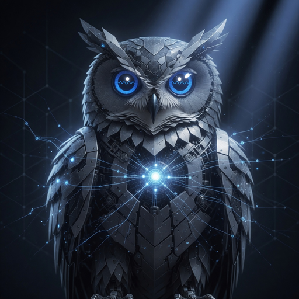
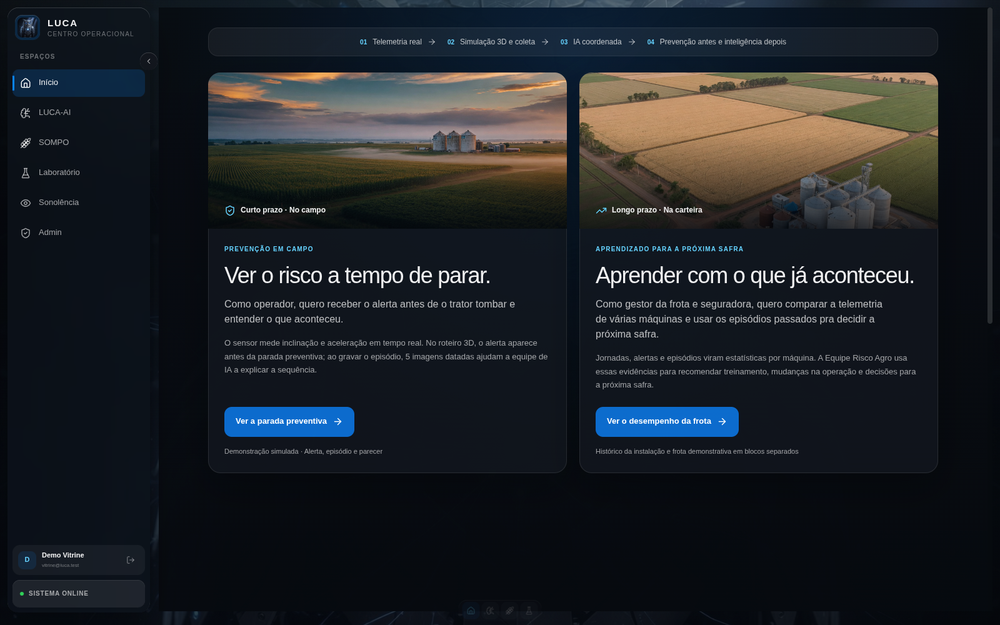
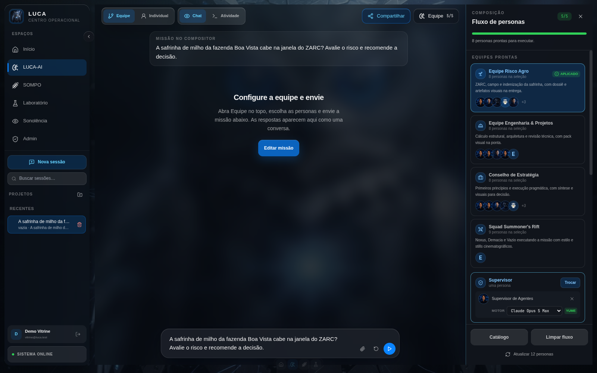
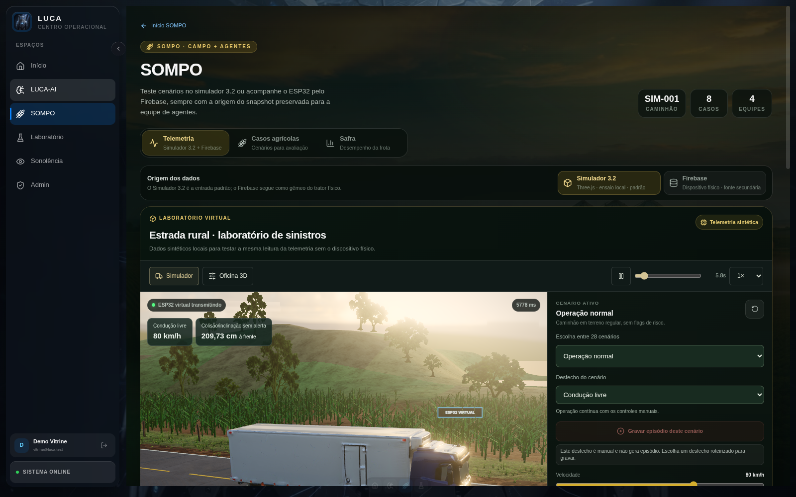
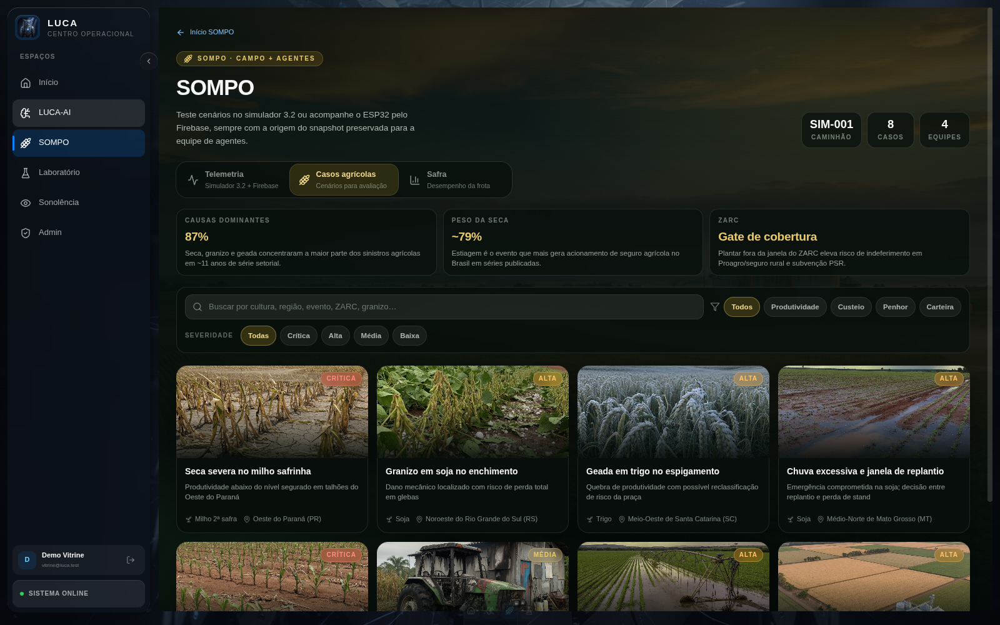
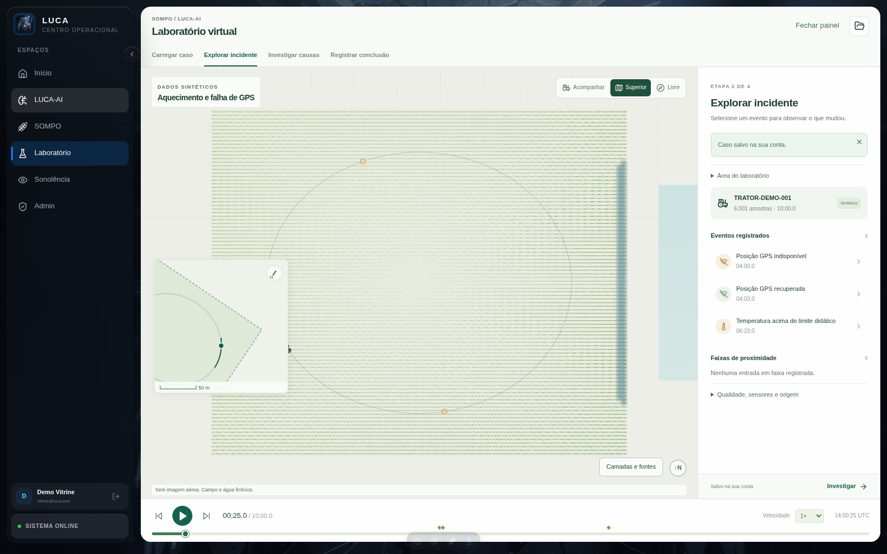

O LUCA-AI transforma um pedido em uma missão executada por personas especializadas. Cada etapa tem dono. A decisão chega numa conversa só. No campo, o SOMPO lê a máquina e o laboratório reconstrói o incidente.
Vídeo narrado, 65 s. Gravado na instância local de demonstração (não na VM de produção), 15/09/2026. Narração OmniVoice, perfil oficial, watermark invisível desligado.
Feito para quem já perdeu uma tarde costurando respostas de cinco chats de IA diferentes.
O fluxo exige supervisor, decisor da missão, executores, aprovação e exibição final. Presets como Equipe Risco Agro preenchem os cinco papéis de uma vez. Sem “alguém respondeu” implícito.
A missão termina numa entrega final: veredito, evidências, riscos e próximas ações. A contribuição de cada etapa fica na mesma conversa.
O módulo SOMPO ensaia telemetria no simulador 3.2 (28 cenários) e traz 8 casos agrícolas. O Laboratório Virtual reconstrói o incidente em 3D a partir de CSV.
Do pedido à decisão em quatro passos. Do campo, o mesmo painel abre telemetria e replay.
Escolha um preset pronto (Equipe Risco Agro, Conselho de Estratégia…) ou monte o fluxo persona a persona.
Uma frase no compositor. Anexos de foto e texto entram junto, se precisar.
Cada etapa roda com a persona e o modelo definidos. Cada resposta fica registrada na conversa.
O relator fecha com veredito, evidências e próximas ações. No SOMPO e no laboratório, o dossiê do campo entra na mesma bancada.
Capturas da instância real de demonstração, 15/09/2026. Sem mockup.

A entrada não é um chat vazio. Mostra o que o painel faz no curto prazo (parar o trator a tempo) e no longo prazo (aprender com a frota para a próxima safra).

O painel lateral mostra o fluxo da equipe. Equipe Risco Agro aplica supervisor, execução, aprovação e entrega. A missão entra numa frase; as respostas aparecem nesta mesma tela.

O ensaio local gera a mesma leitura da telemetria sem o dispositivo físico: velocidade, distância frontal, pitch/roll. Origem do snapshot preservada. 28 cenários no catálogo do simulador.

Seca na safrinha, granizo na soja, geada no trigo. Cada card leva situação, sinais e a pergunta que a equipe precisa responder. Catálogo em src/lib/sompo-cases.ts.

Um CSV vira replay navegável. O caso “Aquecimento e falha de GPS” traz 6.001 amostras em 10 minutos, com eventos de GPS indisponível, GPS recuperado e temperatura acima do limite didático.
Medidos na instância de demonstração desta página e no código deste commit, 15/09/2026.
Fontes: shared/luca-preset-seed.js, src/lib/sompo-cases.ts, shared/sompo-telemetry-simulator.js (20) + shared/sompo-agri-scenarios.js (8), datasets/laboratorio-virtual-v1/manifest.json, src/lib/lab-client.ts (LAB_EXAMPLES). UI conferida na demo em 15/09/2026.
O que muda na prática contra o fluxo comum de um chat único. Verificado no código deste repositório em 15/09/2026.
| Chat único de IA | LUCA-AI | |
|---|---|---|
| Papel por etapa | não existe. tudo é uma resposta só | supervisor, execução, aprovação e exibição nomeados |
| Trilha de execução | resposta final sem contexto de papéis | cada etapa vira um bloco na mesma conversa |
| Entrega consolidada | o usuário consolida na mão | veredito, evidências, riscos e próximas ações |
| Telemetria de campo | não faz parte do chat | SOMPO: simulador 3.2, 28 cenários, origem do snapshot |
| Replay de incidente | não existe | laboratório 3D a partir de CSV/JSON, eventos na timeline |
Fonte: LucasOl1337/LUCA-AI: shared/persona-workflow.js, src/pages/LucaAiPage.tsx, src/pages/SompoPage.tsx, src/pages/LaboratorioPage.tsx. Produção em luca-ai.com.br (GET /api/health 200, versão 0.5.0, 15/09/2026).
Node.js + Python 3. Roda local em 127.0.0.1:4242. A vitrine não publica o app: o produto vivo está em luca-ai.com.br.
git clone https://github.com/LucasOl1337/LUCA-AI.git cd LUCA-AI npm ci npm start # build Vite + Express em http://127.0.0.1:4242
Saúde: GET /api/health · Demo SOMPO isolada: npm run demo:sompo · Estado local em .luca/ · Documentação em docs/.